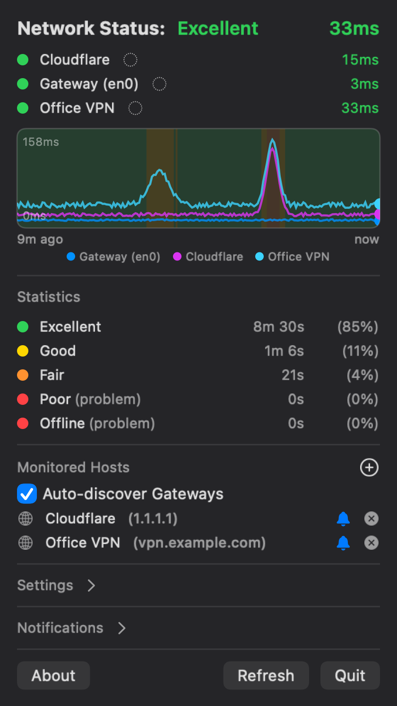
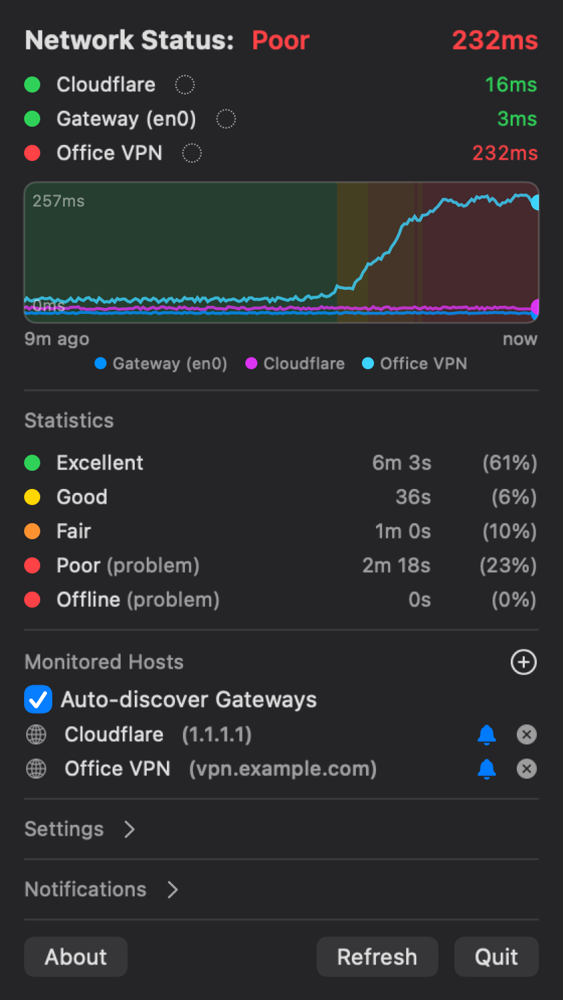
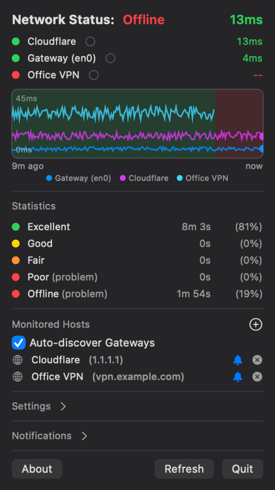
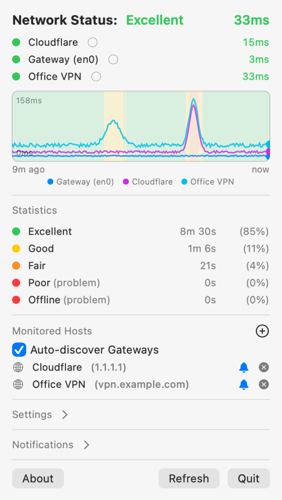
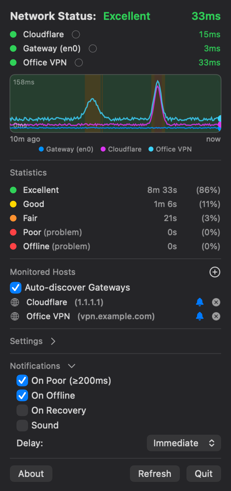
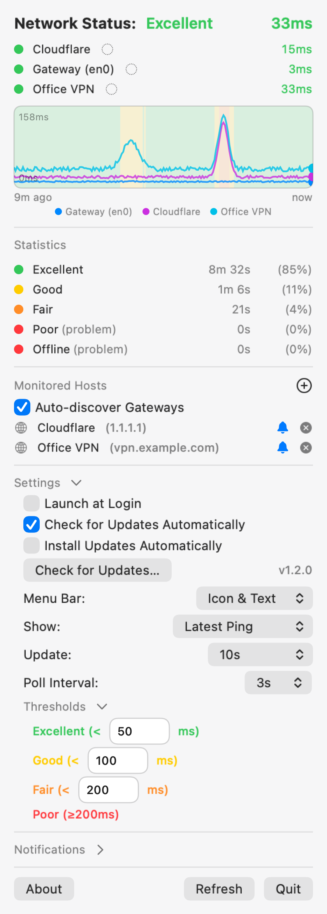

MacPing pings your router and the hosts you care about, and keeps the answer in your menu bar.



A small native app that watches the path from your Mac outward, so you know where the trouble is.
Green, yellow, orange or red, with the latency beside it. Show the icon, a smooth color gradient, the number, or icon and number.
Reads the routing table to find the gateway on every active interface. Nothing to configure.
Add your VPN, your server or a public DNS resolver by IP address or name, and label it.
One line per host, shaded by overall status. Hover over any moment to see every host's latency.
Set your own cutoffs for excellent, good and fair. Poll as often as every second or as rarely as every ten.
Hear about poor, offline and recovered hosts. Add a delay so blips stay quiet, or mute any host you added.
By default the menu bar shows the worst host. Click the target next to a host to follow just that one.
Checks for signed updates once a day, and installs them for you if you want.
These are the default thresholds, and you can change them.
MacPing uses the tools already on your Mac, and needs no admin rights.
SwiftUI throughout. Everything is in one menu. Shown here with sample hosts.



The only traffic is pings to the hosts you see, name lookups for them, and the update check on GitHub, which you can turn off.
Open it and look for the Wi‑Fi icon in your menu bar. Allow notifications if you want alerts.
You need Xcode.
git clone https://github.com/jmaddington/macping cd macping xcodebuild -project MacPing.xcodeproj \ -scheme MacPing -configuration Release \ -derivedDataPath build open build/Build/Products/Release/MacPing.app